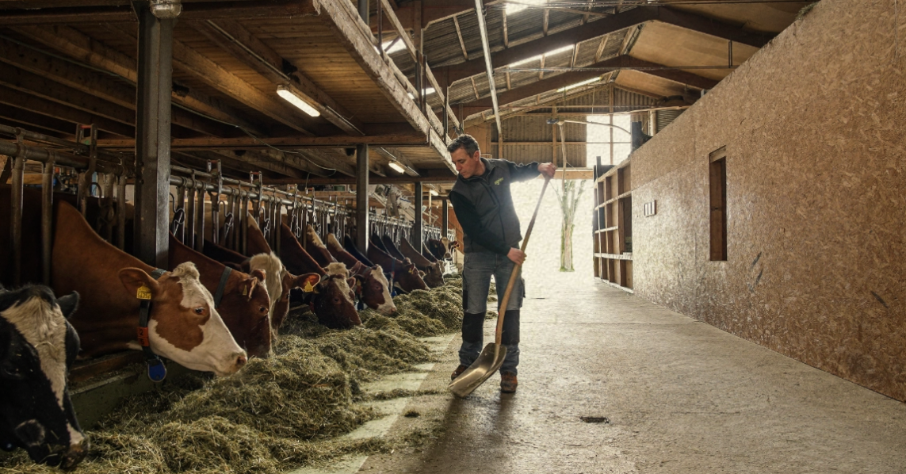

Unternehmen und
Unternehmensarten
Wie lassen sich Unternehmen unterscheiden?
Lernziele
Am Ende dieser Doppellektion können Sie …
Unterscheiden
Unternehmen anhand verschiedener Kriterien einteilen.
Erklären
Unterschiede zwischen Unternehmen und ihren Zielen erläutern.
Beurteilen
Über die Zukunft eines Unternehmens entscheiden und Ihre Entscheidung begründen.
Meine Ferien in 3 Emojis
Welche drei Emojis beschreiben Ihre Herbstferien?
Was gehört zusammen?
Ordnen Sie die 12 Karten anhand eines selbst gewählten Kriteriums in Gruppen ein.
1. Kriterium wählen
Überlegen Sie sich ein gemeinsames Unterscheidungsmerkmal.
2. Sortieren
Teilen Sie die 12 Unternehmen entsprechend in Gruppen ein.
3. Begründen
Erklären Sie Ihre Einteilung.
Was ist ein Unternehmen?
Ein Unternehmen ist eine wirtschaftlich und rechtlich organisierte Einheit, die eigenständig Entscheidungen trifft und wirtschaftliche Ziele verfolgt.
Sinngemäss nach Gabler Wirtschaftslexikon, Stichwort «Unternehmen»
Leistungen
Ein Unternehmen stellt Güter her oder erbringt Dienstleistungen.
Produktionsfaktoren
Dazu setzt es beispielsweise Arbeit, Kapital und Wissen ein.
Organisation
Menschen und Mittel werden koordiniert, damit gemeinsame Ziele erreicht werden.
1. Kriterium: Wirtschaftssektoren
Primärer Sektor
Gewinnung von Rohstoffen und natürlichen Erzeugnissen.
Beispiel: Landwirtschaft
Sekundärer Sektor
Verarbeitung von Rohstoffen, Herstellung von Produkten.
Beispiel: Lebensmittelproduktion
Tertiärer Sektor
Erbringung von Dienstleistungen.
Beispiel: Bank oder Spital
Ein Produkt, drei Wirtschaftssektoren
Wählen Sie ein Produkt und zeigen Sie, wie es die drei Wirtschaftssektoren durchläuft.
Beispiel: Käse
Primärer Sektor
Ein Landwirtschaftsbetrieb hält Kühe und produziert Milch.

Sekundärer Sektor
Eine Käserei verarbeitet die Milch zu Käse.

Tertiärer Sektor
Ein Detailhändler verkauft den Käse an die Konsumentinnen und Konsumenten.

1. Kriterium: Wirtschaftssektoren einordnen
Eine Gruppe nennt die Einteilung. Ziehen Sie die Logos in die Kategorien.
2. Kriterium: Unternehmensgrössen
Häufige Einteilung nach Anzahl Mitarbeitenden (Vollzeitstellen)
Kleinstunternehmen
1 bis 9 Mitarbeitende
Kleinunternehmen
10 bis 49 Mitarbeitende
Mittleres Unternehmen
50 bis 249 Mitarbeitende
Grossunternehmen
Ab 250 Mitarbeitenden
2. Kriterium: Unternehmensgrössen einordnen
Ordnen Sie die Unternehmen nach ihrer Grösse ein und begründen Sie Ihre Zuordnung.
3. Kriterium: Eigentumsverhältnisse
Privatunternehmen
Gehört privaten Personen oder privaten Organisationen.
Öffentliches Unternehmen
Gehört dem Bund, einem Kanton oder einer Gemeinde.
Gemischtwirtschaftlich
Staat und Private sind an der Eigentümerschaft beteiligt.
3. Kriterium: Eigentumsverhältnisse einordnen
Welche Organisation gehört wem? Ziehen Sie die Logos in die passenden Kacheln.
4. Kriterium: Gewinnorientierung
Profit-Unternehmen
Wirtschaften gewinnorientiert. Ein Gewinn soll erzielt werden.
Non-Profit-Organisation (NPO)
Verfolgt hauptsächlich einen gesellschaftlichen oder gemeinnützigen Zweck statt Gewinnerzielung.
4. Kriterium: Gewinnorientierung einordnen
Welche Organisationen sind hauptsächlich gewinnorientiert?
Weitere Möglichkeiten zur Einteilung
Rechtsform
Zum Beispiel Einzelunternehmen, GmbH oder AG.
Branche
Zum Beispiel Handel, Industrie oder Gesundheitswesen.
Räumliche Tätigkeit
Regional, national oder international.
Exit-Ticket: Unternehmen und Unternehmensarten
Zum Abschluss: Bitte beantworten Sie beide Fragen einzeln auf Ihrem Notizkärtchen.
1. Grundlagen
Nennen Sie die vier Einteilungskriterien, anhand derer Unternehmen unterschieden werden können.
2. Das Freibad vor dem Aus
Muss ein öffentliches Unternehmen Ihrer Meinung nach zwingend Gewinn erzielen?
Begründen Sie Ihre Antwort in 2–3 Sätzen und beziehen Sie sich dabei auf das Freibad.